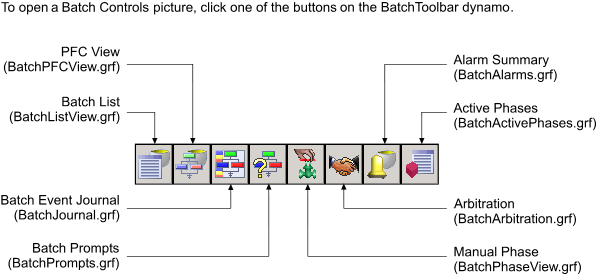

The DeltaV Operate batch controls
The DeltaV Operate Batch controls provide all the functionality needed by the operator to perform most batch operations. The DeltaV Operate Batch controls can be used in place of using the Batch Operator Interface, allowing operators to remain in one application (DeltaV Operate) to perform both batch and continuous control duties.
Precedence for Connecting to Batch Executive Nodes
When a default Batch Executive node is set in the Batch OI Configuration tool and a picture containing a Batch control is opened, that control will use the configured default.
To open the Batch OI Configuration tool, click on the Start menu. Using the Batch OI Configuration tool requires that the user has the key to the BATCH_OI_CONFIGURE lock.
However, if a specific Batch Executive node is configured specifically for the control (in the control's Properties dialog), that Batch Executive node is the one the control connects to. If no default is configured, the operator is prompted to select one for every control on the picture that does not have a default configured.
Default configured in the Batch OI Configuration tool only - The control connects to that Batch Executive
Default configured in the specific control takes precedence over the Batch OI Configuration tool default - The control connects to the Batch Executive configured for the specific control.
No default Batch Executive configured - The operator is prompted to select a Batch Executive each time the picture containing the Batch control opens. The operator is prompted for every control on the picture that does not have a default configured.
Detailed instructions on how to configure these controls and how to operate using them are found in the DeltaV Operate online help.
Detailed information on batch states, batch modes, operating a batch and so on can be found throughout this Batch reference book.
The DeltaV Operate Batch Control Names
These are the names of the controls. All controls can be added to any main picture in DeltaV Operate by clicking the appropriate button on the DeltaV Batch Controls toolbar.
Active Phase Control
Alarm Summary Control
Arbitration Control
Batch Command Toolbar
Batch Hierarchy and Phase Control
Batch List
Batch Manual Phase Toolbar
Batch PFC Control
Batch PFC Toolbar
Batch Step List Control
Batch Unacknowledged Prompts
Event Journal Control
Operator Comments
The Default DeltaV Operate Picture Names
These are preconfigured pictures that are installed with the DeltaV system. You can modify these pictures and save them under a new name. If you save these pictures using the same name, they will be overwritten when the DeltaV software is upgraded.
BatchActivePhases
BatchAlarms
BatchArbitration
BatchJournal
BatchListView
BatchPFCView
BatchPhaseView
BatchPrompts
Operators can easily switch between the pictures by selecting the appropriate button on the toolbar at the top of each default picture.

This toolbar is a dynamo found in the BatchToolbar dynamo set in DeltaV Operate.